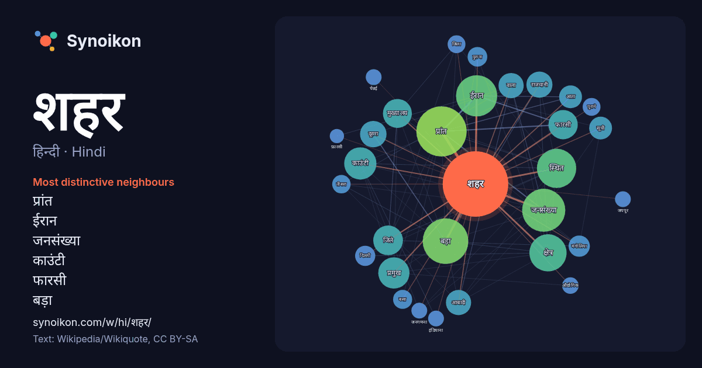

हिन्दी · Hindi · word of the day list
शहर
“city” · The words found around it in 1182 instances from Hindi Wikipedia, Wikiquote.

Most distinctive neighbours
- प्रांत 78×
- ईरान 59×
- जनसंख्या 42×
- काउंटी 38×
- फारसी 33×
- बड़ा 32×
- मुख्यालय 25×
- मंगोलिया 20×
- जिले 17×
- राजधानी 17×
- आबादी 16×
- दूसरा 16×
- सूची 14×
- बसा 14×
- पुराना 13×
- स्थित 13×
- तीसरा 12×
- आता 12×
- इंडियाना 12×
- चेन्नई 11×
× = how many times more often than in general Hindi Wikipedia text.
Most frequent neighbours
- प्रांत 112
- बड़ा 92
- जनसंख्या 82
- ईरान 75
- स्थित 68
- क्षेत्र 61
- भारत 48
- काउंटी 46
- प्रमुख 43
- राज्य 43
- जिले 39
- फारसी 38
- मुख्यालय 37
- नाम 35
- दूसरा 31
- राजधानी 30
- आबादी 28
- वाला 28
- आता 23
- देश 23
In context
- आबादी शहरों में रह रही हैं। वर्तमान में शहर आमतौर पर बड़े महानगरीय क्षेत्र और शहरी क्षेत्र के केंद्र होते हैं। सबसे आबादी वाला उचित शहर शंघाई है। एक शहर अन्य Wikipedia snippets · शहर
- मुम्बई शहर ज़िला भारत के महाराष्ट्र राज्य का एक ज़िला है। ज़िले का मुख्यालय मुम्बई है। मुम्बई महाराष्ट्र महाराष्ट्र के जिले "RBS Visitors Guide India: Wikipedia snippets · मुम्बई शहर जिला
- यह ईरान के शहरों की सूची है। अबादान अबादेह अबार्कूह अबदानन अबहार अबयेक अहार अहवाज़ अजबशिर अलश्तर आलियाबाद अलीगुदर्ज़ अलवंद अमीर कला आमोल अन्दिमेश्क अन्दिशेह Wikipedia snippets · ईरान के शहर
- ओकलैंड शहर गिबसन काउंटी, इंडियाना, संयुक्त राज्य अमेरिका में एक शहर है। सन २००० की जनगढ़ना के मुताबिक इसकी जनसंख्या 2,588 है।2020 की जनगणना में जनसंख्या Wikipedia snippets · ओकलैंड शहर, इंडियाना
- उचित शहर एक शहर की हद है जो कानूनी तौर पर शहर का हिस्सा है। Wikipedia snippets · उचित शहर
- पुराना शहर (इब्रानी: העיר העתיקה, अरबी: البلدة القديمة) वर्तमान यरुशलम के अंतर्गत एक 0.9 वर्ग किलीमीटर दीवारों से घिरा क्षेत्र है। पुराना शहर कई महत्वपूर्ण Wikipedia snippets · पुराना यरुशलम शहर
- भारत के जम्मू और कश्मीर केंद्र शासित प्रदेश में स्थित एक शहर है। यह जम्मू सम्भाग का सबसे बड़ा शहर है और साथ ही जम्मू और कश्मीर की शीतकालीन राजधानी भी है। Wikipedia snippets · जम्मू (शहर)
- ) मंगोलिया का शहर है। इस शहर का कुल क्षेत्रफल 22,374 वर्ग किलोमीटर है। इस शहर की जनसंख्या 19,862 (गणना वर्ष २००६ अनुसार) है। मंगोलिया मंगोलिया के शहर Wikipedia snippets · सूखबातर (शहर)
More Hindi words
- इतिहास
- ईश्वर
- कार्य
- कुत्ता
- गर्मी
- गाना
- घंटी
- घड़ी
- घोड़ा
- चाय
- चित्रकला
- छाया
- जंगल
- जलवायु
- जीवन
- तूफ़ान
- दर्पण
- द्वीप
- नक्षत्र
- नमक
- परिवार
- पहाड़
- पानी
- पैसा
- प्रकृति
- बगीचा
- बिल्ली
- भाषा
- भोजन
- माता
- मानचित्र
- मृत्यु
- मौन
- रेगिस्तान
- रेलगाड़ी
- रोटी
- वर्षा
- विज्ञान
- शक्ति
- शरद
- शहद
- सड़क
- सत्य
- समय
- सर्दी
- सेतु
- स्वर्ण
- स्वास्थ्य
- हृदय
Precomputed on 2026-10-09 with default settings (±5 words, medium corpus). The interactive map can refresh it with live data.